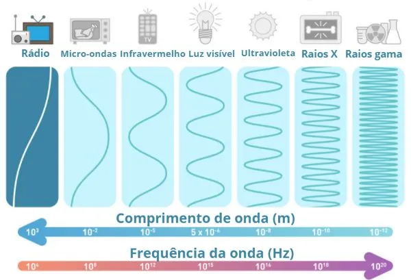
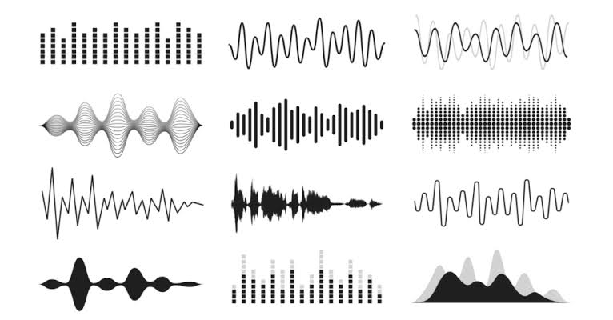

Ondas de Rádio

Características das Ondas de Rádio
As ondas de rádio são ondas eletromagnéticas utilizadas principalmente
na transmissão de informações e na comunicação sem fio. Elas não
precisam de um meio material para se propagar, podendo viajar pelo
vácuo à velocidade da luz, aproximadamente 300.000 km/s.
Essas ondas são produzidas por cargas elétricas em movimento e fazem
parte do espectro eletromagnético. Entre suas principais aplicações
estão as transmissões de rádio e televisão, comunicação por satélite,
telefonia e sistemas de comunicação sem fio.
Comprimento de Onda

O que é?
O comprimento de onda é a distância entre dois pontos equivalentes
consecutivos de uma onda, como duas cristas ou dois vales. Ele é
representado pela letra grega lambda (λ) e medido em metros (m).
Nas ondas de rádio, o comprimento de onda pode variar de poucos
milímetros a centenas de quilômetros, dependendo da frequência.
Quanto menor a frequência, maior é o comprimento de onda. Da mesma
forma, quanto maior a frequência, menor é o comprimento de onda.
Relação com a Frequência
O comprimento de onda e a frequência são grandezas inversamente
proporcionais quando a velocidade de propagação é constante.
Isso significa que ondas com frequências maiores possuem
comprimentos de onda menores, enquanto ondas com frequências
menores possuem comprimentos de onda maiores.
Faixa de Frequência

O que é?
A frequência representa a quantidade de oscilações completas
realizadas por uma onda em um segundo. Sua unidade de medida é
o hertz (Hz). As ondas de rádio ocupam uma faixa do espectro
eletromagnético que vai aproximadamente de 3 kHz a 300 GHz.
Essa faixa é dividida em diferentes bandas, cada uma com
características e aplicações específicas.
Principais Faixas de Frequência
ELF (Frequência Extremamente Baixa): de 3 Hz a 30 Hz.
Possui aplicações especializadas, como algumas comunicações
submarinas.
VLF (Frequência Muito Baixa): de 3 kHz a 30 kHz.
Utilizada em comunicações especializadas e navegação.
LF (Baixa Frequência): de 30 kHz a 300 kHz.
Utilizada em sistemas de navegação e transmissões de sinais.
MF (Média Frequência): de 300 kHz a 3 MHz.
Utilizada principalmente em transmissões de rádio AM.
HF (Alta Frequência): de 3 MHz a 30 MHz.
Permite comunicações a longas distâncias, inclusive entre
continentes, por meio da reflexão das ondas na ionosfera.
VHF (Frequência Muito Alta): de 30 MHz a 300 MHz.
Utilizada em transmissões de rádio FM e televisão.
UHF (Frequência Ultra Alta): de 300 MHz a 3 GHz.
Utilizada em televisão digital, telefonia móvel e Wi-Fi.
SHF (Frequência Super Alta): de 3 GHz a 30 GHz.
Utilizada em radares, satélites e algumas tecnologias de
comunicação sem fio.
EHF (Frequência Extremamente Alta): de 30 GHz a 300 GHz.
Utilizada em tecnologias avançadas de comunicação e radares.
```